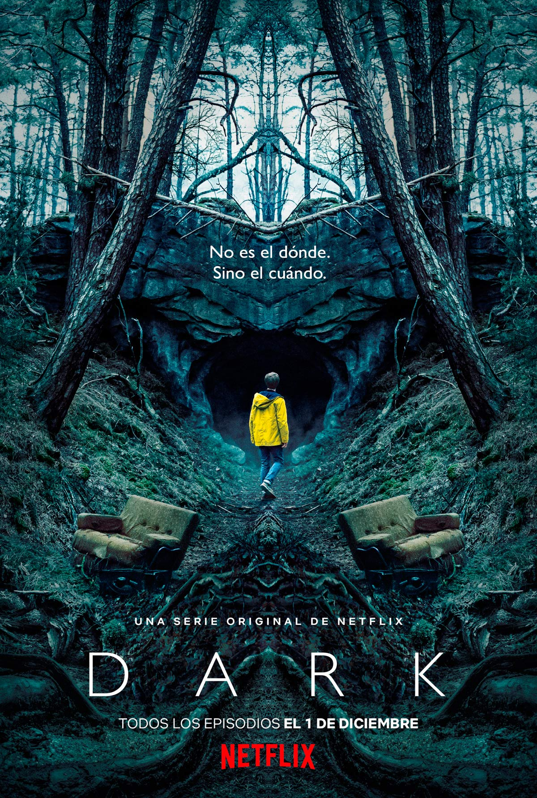

El ciclo final comienza
Después de meses de espera, la tercera temporada de Dark por fin reveló su trailer final que presenta el principio del fin del mundo y la forma en la que funciona esta extraña máquina del tiempo que la Martha del futuro alterno usa para rescatar a Jonas y llevarlo a su mundo
No se puede evitar la destrucción, pero está claro que todavía hay una pequeña oportunidad para detener a Adam, pero Jonas tiene que arriesgarlo todo y, en el camino, nos van a aclarar todos los detalles y conexiones que todavía no se han revelado por completo.
Trailer publicado en Youtube
Temporadas
Primera Temporada
Tras la desaparición de un joven, cuatro familias desesperadas tratan de entender lo ocurrido a medida que van desvelando un retorcido misterio que abarca tres décadas... Saga familiar con un giro sobrenatural, "Dark" se sitúa en un pueblo alemán, donde dos misteriosas desapariciones dejan al descubierto las dobles vidas y las relaciones resquebrajadas entre estas cuatro familias.
Ver trailerSegunda Temporada
Transcurridos seis meses de las desapariciones, la policía forma un grupo de trabajo muy completo. En el año 2052, Jonas se entera de que muchas muertes se dieron en un evento apocalíptico, asimismo, Clausen y Charlotte entrevistan a Regina lo que conlleva a una desenlace nada agradable. Por ende, un extraño lleva a Hannah a 1987, donde Claudia tiene un encuentro desconcertante y Egon visita a un antiguo némesis.
Ver trailerTercera Temporada
En 2019, Jonas sale de la cueva y entra en un mundo extraño pero conocido: el pueblo de Winden, estremecido por la desaparición de uno de sus jóvenes. Martha viaja a 1888 para alertar a sus amigos sobre el desastre de 2020. Los habitantes presentes y pasados de Winden buscan a sus seres queridos desaparecidos.
Ver trailer